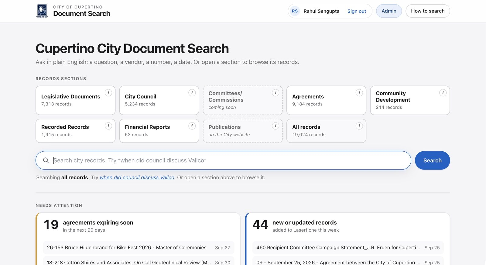

01
- Client
- City of Cupertino
- Role
- Built and shipped it
- When
- 2026
- Status
- In daily use by City staff
- 1.2M
- pages indexed
- 100%
- recall@1, gold set
- 1.4s
- median search
Public Records Search
Semantic search over a municipal archive, for the City of Cupertino
Search and question answering across the City of Cupertino's public records repository: roughly 1.2 million pages, every record type, 1953 to today. Hybrid vector and keyword retrieval with a calibrated relevance gate, relationship graphs built automatically per record type, and plain-English questions answered with citations. It replaced a system that held a single record type and nine years of data; this one spans more than 20 record types across seventy years, and indexes new documents the moment they are filed.
Stack Python and FastAPI · Azure OpenAI embeddings and GPT · Azure AI Search · cross-encoder reranking · BM25 · Laserfiche as system of record · Azure App Service with Entra ID · CI/CD with Application Insights
